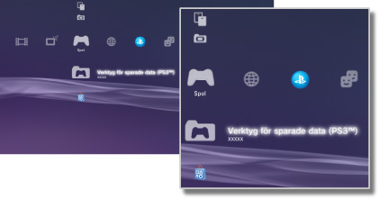

Spel > Spelkategori
Spelkategori
Följande ikoner visas under  (Spel). Ikonerna som visas varierar beroende på vilka villkor som används.
(Spel). Ikonerna som visas varierar beroende på vilka villkor som används.

 |
PlayStation®Store | Se information från PlayStation®Store. |
|---|---|---|
 |
Avsluta spelet | Stäng av PlayStation®3-programvara. Denna ikon visas bara medan du spelar. |
 |
(titelnamn) | Spela ett spel i PlayStation®3-format En bild visas när ikonen har valts. |
  |
PlayStation®2-skiva | Spela upp en PlayStation®2-programvarutitel. |
 |
PlayStation®-skiva | Spela upp en PlayStation®-programvarutitel. |
 |
Verktyg för sparade data (PS3™) | Kopiera/ta bort eller visa information om sparade data för PlayStation®3-programvara. |
 |
Verktyg för sparade data (minis / PSP™) | Kopiera/ta bort eller visa information om sparade data för minis och PSP™Game (PSP™-spel)-program. |
 |
Verktyg för Memory Card | Du kan spara data för PlayStation®2-/PlayStation®-programvara genom att skapa och tilldela kortplatser för interna minneskort. Du kan också kopiera/ta bort eller visa information om sparade data. |
| Applikationsverktyg för PS Vita-systemet | När du säkerhetskopierar sparade data för spel som spelats på PS Vita-system eller programdatan (speldata) från PS Vita-system till PS3™-systemet, sparas datan i programhjälpen på PS Vita-system. | |
| Verktyg för speldata | Ytterligare data kan sparas för vissa spel. Du kan ta bort eller visa information om sparade data. | |
 |
(PlayStation®3- eller PlayStation®2-programvara installerad i lagringsminnet) | PlayStation®3- eller PlayStation®2-programvara installerad i lagringsminnet. En miniatyrbild för spelet visas. |
 |
(data som laddats ner i lagringsminnet) | Denna ikon visas för spel- eller expansionsdata som laddats ned på lagringsminnet. Vid uppstart installeras data. Ikonen varierar beroende på vilken typ av data det är. |
Tips!
 eller
eller  visas för innehåll som spärrats via barnlås. Innehållet kan spelas upp om man anger ett fyrateckens lösenord. Lösenordet ställs in i
visas för innehåll som spärrats via barnlås. Innehållet kan spelas upp om man anger ett fyrateckens lösenord. Lösenordet ställs in i  (Inställningar) >
(Inställningar) >  (Säkerhetsinställningar).
(Säkerhetsinställningar).- Om en enhet som inte är kompatibel med HDCP (High-bandwidth Digital Content Protection)-standarden är ansluten till systemet med en HDMI-kabel, kan inte videofilm och/eller ljud gå ut från systemet.
- Copyright-skyddat innehåll på en Blu-ray Disc-skiva fungerar endast med 1080p med en HDMI-kabel som är ansluten till en enhet som är kompatibel med HDCP-standarden.
- I sällsynta fall kanske skivorna och andra media inte fungerar korrekt när de spelas upp på PS3™-systemet. Det beror främst på variationer i tillverkningsprocessen av programvarukodning eller programvaran.
Viktig information
- Vissa PlayStation®2- eller PlayStation®-programvarutitlar kan spelas upp annorlunda på PS3™-systemet än de gör på PlayStation®2- och PlayStation®-systemen, eller inte spelas upp korrekt på PS3™-systemet.
- Skivor i PlayStation®2-format kan inte spelas på vissa PS3™-system. För mer information, se [Olika typer av uppspelningsbara skivor], besök SIE-webbsidan för ditt land eller läs dokumentationen som följde med ditt PS3™-system.